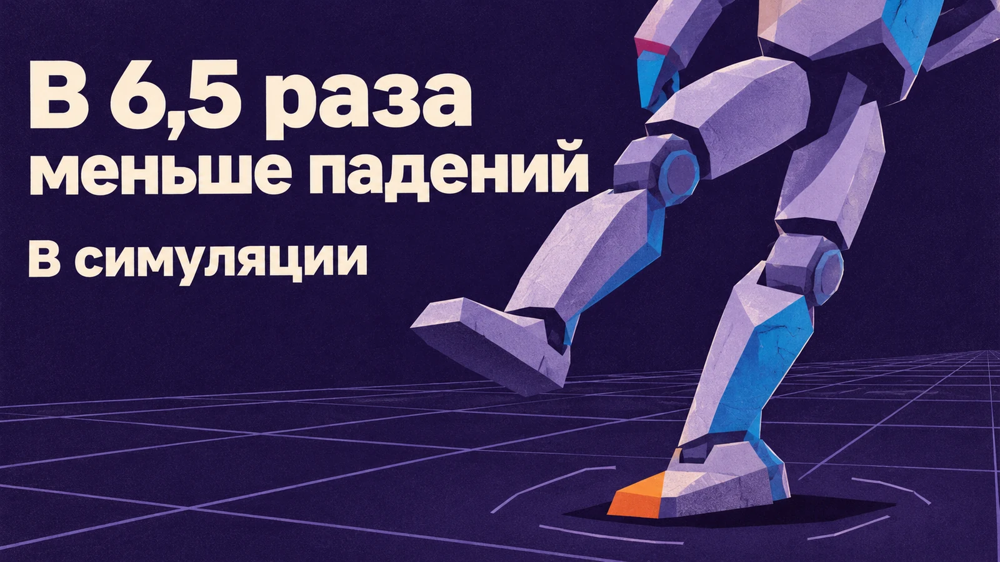

Наука и экология
Фундаментальная наука, космос, экология и наблюдение за природой.
15 материалов
← Все темыПубликации
 24 ноября 2026 · Новости ИИ
24 ноября 2026 · Новости ИИGoogle устроила научные конференции для нейросетей
Команды ИИ-агентов Gemini на виртуальных конференциях совместно улучшали алгоритмы для квантовых компьютеров, а корректность решений проверяли математически.
 23 ноября 2026 · Новости ИИ
23 ноября 2026 · Новости ИИ403 дата-центра США загрязняют атмосферу как целая Дания. Greenpeace взялась за NVIDIA
Исследователи оценили выбросы 403 американских дата-центров в 25,7 млн тонн CO₂ за год. Greenpeace отдельно сообщила о росте выбросов в цепочке поставок NVIDIA на 725% с 2020 года.
 23 ноября 2026 · Новости ИИ
23 ноября 2026 · Новости ИИGoogle доверила Безосу запуск космических ИИ-серверов после испытания с Маском
Google заключила соглашение с Blue Origin о запуске спутников Project Suncatcher на New Glenn в первом квартале 2029 года. Каждый аппарат получит вычислительные мощности масштаба серверной стойки.
 22 ноября 2026 · Новости ИИ
22 ноября 2026 · Новости ИИ167 лет математики не могли доказать гипотезу Римана — Claude помог, и результат уже подтвердили
Левент Альпёге и Claude представили формальное доказательство гипотезы Римана из 17 миллионов строк Lean-кода. Сообщества Lean и Mathlib подтвердили корректность проверки.
 18 ноября 2026 · Новости ИИ
18 ноября 2026 · Новости ИИНейросети начинают отрицать изменение климата, если пользователь с ними спорит
ЮНЕСКО и UCL исследовали, как языковые модели меняют ответы на климатические вопросы под давлением пользователя. Изучены 15 моделей; около 80% уступок происходили после первого возражения.
 17 ноября 2026 · Новости ИИ
17 ноября 2026 · Новости ИИGPT-6 Astra помогла физику найти решение задачи, над которой работали больше 50 лет
Натаниэль Крейг с помощью GPT-6 Astra предложил математическую конструкцию для непертурбативного описания Стандартной модели на решётке. О роли нейросети физик рассказал 15 ноября.

14 ноября 2026 · Новости ИИУчёные научили роботов падать в 6,5 раза реже
Учёные Мичиганского университета представили PRISM — модуль управления роботами, который снизил частоту падений в симуляции и повысил успешность захвата предмета настоящим манипулятором.
 14 ноября 2026 · Новости ИИ
14 ноября 2026 · Новости ИИРоботам дали «мышечную память» — теперь они справляются с 92% испытаний
Исследователи MIT и Университета Карнеги — Меллона разработали Workspace Models: компактная память помогает роботам удерживать важные события и быстрее действовать. В четырёх лабораторных заданиях средний успех достиг 91,5%.
 14 ноября 2026 · Новости ИИ
14 ноября 2026 · Новости ИИGoogle научила ИИ заглядывать в будущее вашего здоровья на три месяца вперёд
Экспериментальная система Google SensorWM моделирует, как изменения сна, ходьбы и активности могут повлиять на показатели здоровья за 12 недель. В основе — данные носимых устройств и 125 сценариев распорядка.
14 ноября 2026 · Новости ИИИИ ускорил расчёты промышленных биореакторов в 10 тысяч раз
Исследователи Технического университета Граца разработали CLARA — открытую систему, которая упрощает вычислительные модели биореакторов до 5–50 зон и ускоряет моделирование до 10 тысяч раз.
 13 ноября 2026 · Новости ИИ
13 ноября 2026 · Новости ИИМинсельхоз США ошибся с прогнозом кукурузы и посадил ИИ перепроверять свои расчёты
Минсельхоз США подключил ИИ к проверке ноябрьского отчёта об урожае после ошибок в сентябрьских прогнозах кукурузы для Канзаса и Небраски. Ранее эксперимент с ИИ помог обнаружить сбой в старых данных.
 11 ноября 2026 · Новости ИИ
11 ноября 2026 · Новости ИИИИ-робот нырнул на 4 км за металлами. Улов — 450 граммов
Impossible Metals сообщила о сентябрьском испытании подводного робота Eureka в Тихом океане: аппарат на глубине более 4 км собрал около 450 г полиметаллических конкреций. Компания утверждает, что ИИ помогает выбирать камни без видимых морских организмов; независимая экологическая оценка расширенной системы намечена на 2027 год.
 11 ноября 2026 · Новости ИИ
11 ноября 2026 · Новости ИИAnthropic выпустила два новых Claude и заявила о решении задач физики чёрных дыр
Anthropic выпустила Claude Fable 5.2 и Claude Mythos 5.2 на одной базовой модели с разными ограничениями доступа. Компания представила две научные рукописи по физике чёрных дыр и результаты испытаний ИИ в математике, инженерии и робототехнике; независимого рецензирования научных работ пока нет.
 10 ноября 2026 · Новости ИИ
10 ноября 2026 · Новости ИИMIT научил ИИ предсказывать поведение песка, воды и белков
Исследователи MIT и Университета Британской Колумбии представили WorldParticle — общую нейросетевую архитектуру для моделирования шести категорий физических процессов, от песка и жидкостей до молекулярной динамики. Для каждой категории пока обучается отдельная модель.
 9 ноября 2026 · Новости ИИ
9 ноября 2026 · Новости ИИИИ отправили искать инопланетян. Теперь он сам управляет радиотелескопом
SETI Institute и Breakthrough Listen подключили ИИ-агентов к радиотелескопам Allen Telescope Array для управления антеннами и обработки сигналов в ходе наблюдений; NVIDIA заявляет скорость обработки до 2,4 Тбит/с.